| Previous Section | Next Section | Index | Questions | Search the Text |
Instruction operands can be obtained in many ways. These various ways are called addressing modes.
Instructions that involve memory locations typically specify the address with an instruction operand. The address of the memory location is called the effective address. Sometimes the effective address is specified explicitly, other times it is specified to be the result of an address calculation. In one addressing mode (immediate) the effective address itself is treated as though it were the contents of the memory location.
The inherent mode means that the location of the operand is specified implicitly by the instruction. In our original example program, the DECA instruction uses inherent addressing mode. Its operand is in accumulator A. For most instructions that use registers the register is inherent in the instruction.
For immediate mode, the operand is used as the value for the operation rather than the memory location containing the value for the operation. Immediate mode is available for most instructions for which the data source is in memory, such as the load, move, and arithmetic instructions. Immediate mode is signified by the use of a leading # character in the operand.
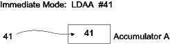
These are instructions using immediate mode:
XYZ: ds 1 ; variable XYZ
...
ldaa #4 ; load accumulator A with the value 4
ldx #XYZ ; load register X with the address of variable XYZ
subb #1 ; subtract 1 from accumulator B (decrements B)
movb #25 XYZ ; Move the value 25 into variable XYZ.
movb #$25 XYZ ; Move the hexadecimal value 25 (37 decimal) into XYZ
The size of the operand is either one or two bytes, depending on the size of the destination.
The Direct and Extended addressing modes are the default modes. The address of the memory location is specified explicitly by the operand. The size of an extended mode operand is two bytes. If the memory location is in the range 0 to $ff, then if the Direct mode is available it is used automatically. The size of a direct mode operand is one byte.
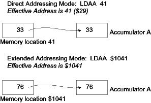
Extended mode was used in the example program. It also appears as the destination operand in the last two examples of the immediate addressing mode, above. Some other examples:
XYZ: ds 1 ; Byte variable XYZ
PRS: ds 2 ; Word (16 bit) variable PRS
...
ldaa XYZ ; Load accumulator A from byte variable XYZ
addd PRS ; Add contents of word variable PRS to accumulator D
The difference between Immediate addressing mode and Direct/Extended addressing modes can be confusing. In general, if we want a constant value or the addess of a variable we use immediate mode, while for the contents of a variable we use direct or extended modes. Here are some examples, with the C language equivalents. If we have a word variable PQR we would define it:
PQR: ds 2
In C this would be "int PQR;" To obtain the value stored in PQR, we would execute:
ldd PQR
In C this would just be "PQR" in an expression. To obtain the address of PQR, we would execute:
ldd #PQR
In C this would be "@PQR". Note that this is something that we would not often want to do. To obtain the constant value 123, we would execute:
ldd #123
In C this would be "123". We should access memory locations by symbolic names, but if we wanted the contents of the memory word starting at location 123 we would execute:
ldd 123
This does not load the constant value. In C this would be "*((int*)123)".
Relative addressing mode is used by branch instructions. The effective address is calculated by adding the single byte operand, as a signed value, to the value of the program counter. This allows the branch instructions to have target addresses from -128 to +127 bytes from the start of the next instruction. NOTE: In branch and jump instructions, the effective address is the target location of the branch/jump.
The Increment/Decrement/Test and branch if equal/not-equal to zero instructions have a 9 bit relative offset allowing target addresses from -256 to +255 bytes from the start of the next instruction.
When relative addressing mode is used in the assembler, the actual target address is given and the assembler calculates the relative address automatically. If the address is out of range, an error message is given.
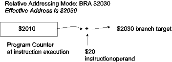
The Indexed Addressing modes calculate the effective address based on the contents of registers and constants that are encoded into the operand fields.
In this indexed mode, a constant value is added to the contents of one of the 16 bit registers X, Y, SP, or PC, to create the effective address. This is the most commonly used index mode. Any constant value can be given and the assembler picks the mode giving the smallest instruction. The 5 bit constant offset gives a range of -16 through +15 and takes one operand byte. The 9 bit offset gives a range of -256 through 255 and takes two operand bytes. The 16 bit offset takes three operand bytes.
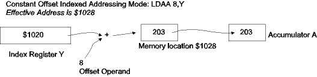
To specify constant offset indexed mode, the operand consists of a constant value and a register name separated by a comma:
XYZ: ds 10 ; 10 bytes of data (an array)
....
ldx #XYZ ; Address of array loaded into index register X
ldaa 1,X ; load accumulator A with data one byte into array
adda 0,X ; add data byte at first location in array
ldx #9 ; index into array (may be result of calculation)
adda XYZ,X ; add data byte at index 9 of array XYZ to A
Indexing with the X or Y registers is commonly used to access data in tables or arrays. The example above would be equivalent to the C language expression "XYZ[1] + XYZ[0]+XYZ[9]".
This indexed mode differs from the constant offset indexed mode in that the sum of the constant and the register contents is the address of a word in memory that contains the effective address of the data. This addressing mode is used to index into a table of addresses. The constant offset is 16 bits, and this operand takes three bytes.
To specify constant indirect indexed mode, the operand consists of a constant value and a register name separated by a comma and enclosed within square brackets.
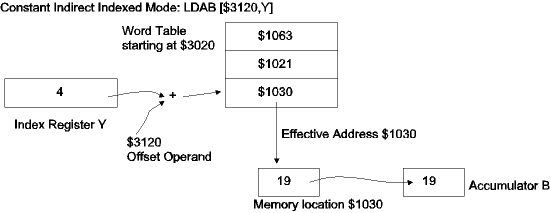
Another example of use:
org $3000 ; data starts at location $3000
ABC: db 20 ; target data
DEF: db 30 ; more target data
GHI: dw ABC,DEF ; table of data addresses
...
ldy #GHI ; table address loaded into index register Y
ldaa [0,Y] ; Accumulator A is loaded with 20, the contents of ABC
ldab [2,Y] ; Accumulator B is loaded with 30, the contents of DEF
Note that in the above example, the constant 2 is used to access the table entry containing the address of location DEF. The reason for this is the table contains words which are two bytes long, so the second entry in the table is at address offset 2 rather than 1. In the C language, this example would be:
char ABC, DEF;
char *GHI[] = {&ABC, &DEF};
char a,b; /* representing accumulators A and B */
a = *GHI[0];
b = *GHI[1];
This mode behaves as the constant indexed mode with a constant offset of zero and register of X, Y, or SP, but with a very useful addition. A value of 1 through 8 can be added or subtracted from the index register before or after the effective address calculation. This addressing mode uses a single byte operand.
This mode is specified in the assembler as follows. n is a constant from 1 through 8, and R is the register X, Y, or SP.
| n,+R pre-increment, R is incremented by n before the address calculation | 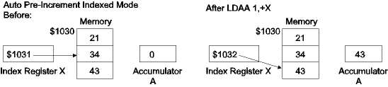 |
| n,R+ post-increment, R is incremented by n after the address calculation | 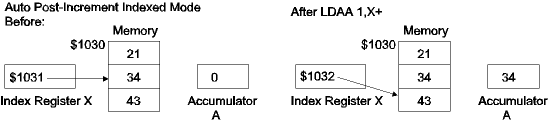 |
| n,-R pre-decrement, R is decremented by n before the address calculation | 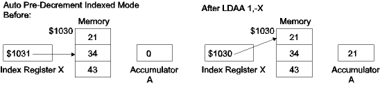 |
| n,R- post-decrement, R is decremented by n after the address calculation |
It is important to realize that the n value is not a constant offset but is the increment/decrement value. The constant value is always zero in this indexed mode. The + or - sign is necessary to distinguish this mode from the constant indexed mode.
These modes are commonly used for algorithms that advance through memory. For instance, to move the 8 bytes starting at location AB1 to location BC7, we can execute:
ldx #AB1
ldy #BC7
movw 2,X+ 2,Y+ ; move first two bytes
movw 2,X+ 2,Y+ ; move second two bytes
movw 2,X+ 2,Y+ ; move third two bytes
movw 2,X+ 2,Y+ ; move last two bytes
In the C language this would be:
int *x, *y; x = &AB1; y = &BC7; *y++ = *x++; *y++ = *x++; *y++ = *x++; *y++ = *x++;
This mode calculates the effective address as the sum of an index register (X, Y, SP, or PC) and an accumulator (A, B, or D). If an 8 bit accumulator is specified, then its value is taken as unsigned.
This mode is specified in the assembler as the accumulator name and the index register name separated by a comma. This mode uses a single operand byte.
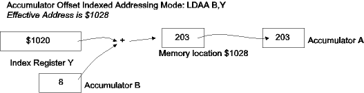
Accumulator Offset Indexed addressing mode is useful for addressing elements of tables and arrays where the start of the table is kept in an index register and the offset into the table is calculated in an accumulator:
ABC: ds 20 ; 20 byte array
INDX: db 3 ; index into array
...
ldx #ABC ; address of start of array
ldaa INDX ; index into array
ldaa A,X ; Accumulator A is loaded with the contents of the
; 4th byte of ABC
In this addressing mode, the contents of the D accumulator are added to the contents of X, Y, SP, or PC to obtain the address of a word containing the effective address of the instruction. This mode is specified in the assembler with the operand [D,R] where R is the register X, Y, SP, or PC. This is a single byte operand.
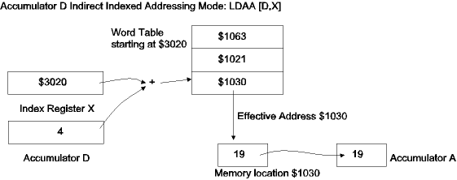
The most common use of this addressing mode is in jump tables. Suppose one wants the program to branch to one of locations L1, L2, or L3 depending on a value in accumulator D being 0, 2, or 4, respectively. This can be accomplished with the following instruction followed immediately by the jump table:
jmp [D,PC]
dw L1
dw L2
dw L3
Let's say the value in accumulator D is 2. The jump instruction operand says to add the contents of D to the contents of the PC. The PC points to the following instruction, which is the dw data declaration. 2 bytes past that is the dw that contains the value L2. The contents of that location are fetched and becomes the effective address. The jump instruction goes to the effective address, L2.
The S12CPUV2 Reference Manual lists all instructions, describing their function and applicable addressing modes. The table describing the ADDA instruction is (figure copied from the reference manual):
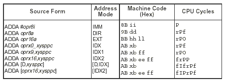
The Address Mode column has the abbreviation for the type of addressing mode that applies to the row. Note that the distinction between IDX, IDX1, and IDX2 is the length of the object code - IDX1 adds one byte and IDX2 adds two bytes, while IDX adds no additional bytes to the basic instruction length. The format of the assembler instruction is in the first column, Source Form. The precise type of operands allowed is shown there in a fairly cryptic form that is best understood by reading the guide at the start of Appendix A in the guide. For instance, oprx9,xysppc shown under the IDX1 address mode is described, "Any integer from -256 to 255," and "Register designator for X or Y or SP or PC." From this we see that IDX1 in this case is the 9 bit Constant Offset Indexed mode.
The Machine Code column shows the code needed to implement the instruction. In this case, depending on address mode, the first byte is $8B, $9B, $AB, or $BB. The meaning of the other bytes is given in table A-5 of the Appendix. For the IDX1 address mode, the bytes show as xb and ff, which are described as "indexed addressing post-byte" and "Low-order eight bits of a 9 bit signed constant offset in indexed addressing...". The mysterious xb byte, which is used in all indexed modes, determines the type of indexing used. It is described in an earlier manual as shown here, and in the Users Guide in a more verbose fashion in table 4-2:
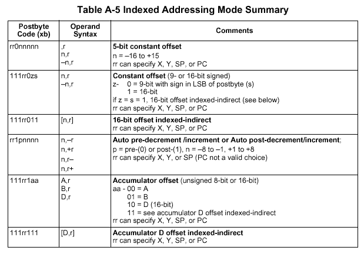
From this we see that for the 9 bit Constant Offset Indexed Mode has three leading 1 bits, two bits indicating the register (X, Y, SP, or PC), two 0 bits, and the sign bit of the 9 bit offset. Other index bytes can be similarly encoded or decoded.
References: See Section 3 in the S12CPUV2 Reference Manual.
Continue with Instruction Timing.
Return to the Index.